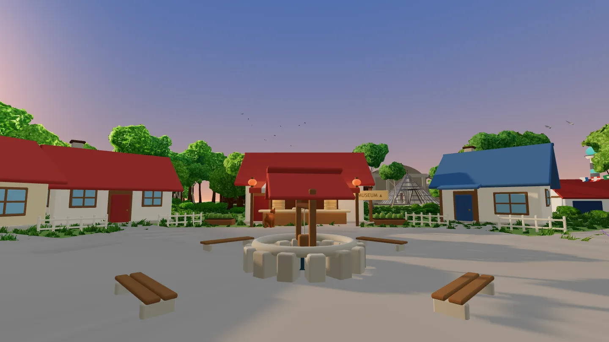
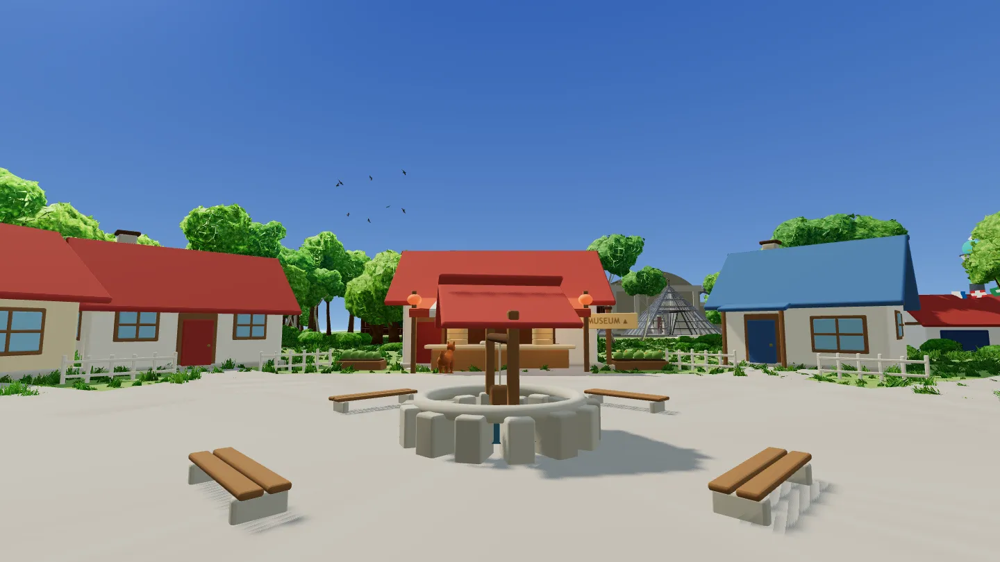
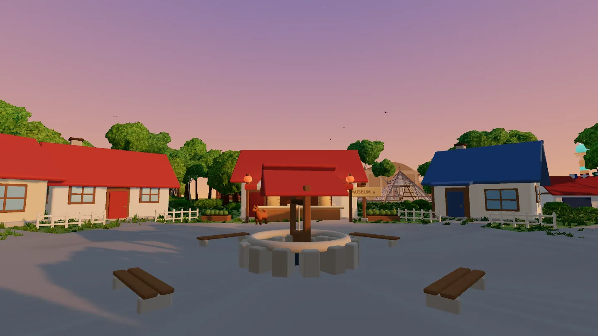
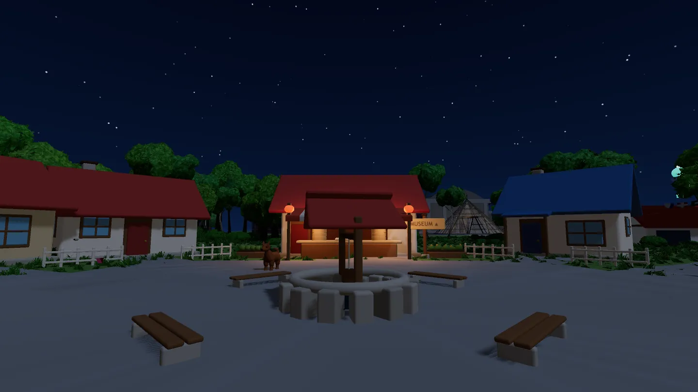
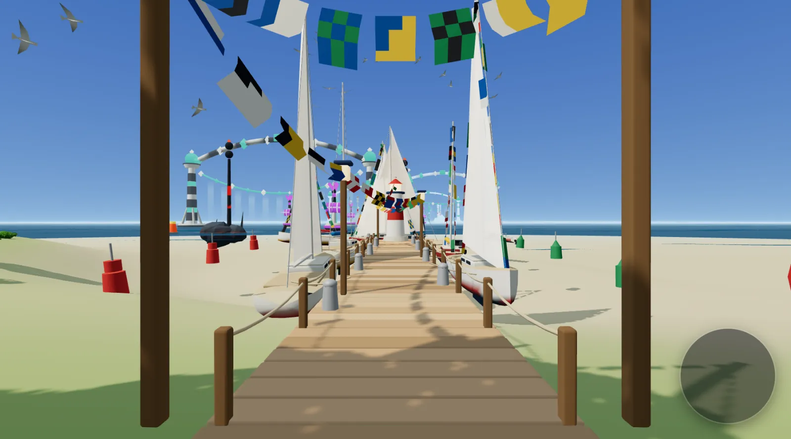

Case study / 005
Building Tiwari Town: a birthday you can walk through
For my partner's birthday I built her a small world that runs in a browser tab. You walk it in first person: a town square, a momo shop, a harbour, a mountain overlook, a museum, and a door under a tower. Every shape in it is made by code.
- ground baking…
- 220 m across
- north up
01
Intro
Her birthday was 3 August 2026, and that was the deadline. The gift is published as Project Tiwari. I call it Tiwari Town.
The shape comes from Pallet Town, the first town in the old Pokémon games: a small square, a few houses, roads out to somewhere. I kept the shape and put places from her life at the ends of the roads. Kiel's harbour is to the west, a Nepal overlook to the north-east, the Tech Tower due north. At the end of the walk, the door under the tower opens the next present.
It was walkable by her birthday, and it kept growing for 18 days after: phone support, a boat race in the harbour, an observatory with a lift up the outside, and racing a friend live.
Where it runs. In any modern browser, on a laptop or on a phone turned sideways, which gets its own thumbstick. Nothing to install.
02
Every shape is code
One rule holds throughout: no art files. The ground is a heightfield. Buildings and props are boxes with rounded edges. Anything organic is a pile of spheres melted into a single skin by marching cubes. Every random number hangs off a single seed, 20260803, her birthday, so the world is the same on every load.
That last part is what made it buildable. Each model was tuned by a script that photographs it and saves the pictures, about 10 seconds a round. If the ground shifted between runs, no picture could tell you whether an edit helped.
The dog is the clearest case. Fig. 3 builds it the way the game does, in your browser. Drag the resolution and watch the triangle count. Turn the weld off and you get the faceted dog the weld fixed.
This figure needs WebGL, which this browser has turned off.
- parts 7
- spheres 57
- cell 24 mm
- triangles 0
- vertices 0
- built in 0 ms
No audio files either. Footsteps, wind and the sound of each place are synthesised in the browser as she walks. The whole soundscape downloads 0 bytes of audio.
03
A dog that plants its feet
A walk cycle built on sine waves never plants a foot: the paw moves fastest exactly when it should be standing still on the ground, and the dog looks dragged rather than walking.
So each leg's cycle here has 2 halves. On the ground, the hip sweeps back at a constant rate, which holds the paw still while the body passes over it. In the air, it eases forward with the knee tucked. The stride rate isn't tuned at all. It falls out of the geometry:
stride rate = speed × duty ÷ (2 × hip height × sin swing)
Walk, trot and gallop are all worked out and blended by speed, because a dog changes which feet land together as it speeds up. In Fig. 4, drag the speed and watch the bars: they're the paws on the ground.
This figure needs WebGL, which this browser has turned off.
- walk 0%
- trot 0%
- gallop 0%
- swing 0°
- duty 0
- stride 0 Hz
8 dogs, no starter. Nothing in the world asks her to decide anything, so there's no starter to pick. 8 dogs wander the town, the picnic, the harbour and the vistas, and she meets them wherever she happens to be.
04
4 kinds of light
The world has a morning, a day, an evening and a night, plus Auto, which reads your clock. The idea came from Cohort's website, which changes mood with the time of day.
A mood is a table of numbers: where the sun is and its colour, the sky from horizon to zenith, fog, exposure, how hard the lamps burn, stars, the tint of the water. Changing mood blends between 2 tables over 1.1 seconds on a smoothstep. Everything it drives is a shader uniform or a light setting, so the blend adds no render pass. The one exception came later: bloom on the lamps, which only evening and night pay for.
Day is the original hard-coded palette, to the digit. Every model had been tuned against that noon sky, and if day drifted, every one of those judgements would quietly be wrong.




- sun 49° up
- intensity 2.70
- exposure 1.00
- fog 70 to 320 m
- lamps ×1.00
- stars 0.00
- bloom 0.00
8 lamps, always. three.js lights every pixel with every point light in the scene, however far away. With 45 in the world, lighting only the 8 nearest, re-picked 4 times a second, took a frame in the perf test from 764.8 ms to 48.3 ms. Always exactly 8: if the count changed, every shader in the world would recompile.
05
It talks like a vlog
There's no dialogue and there are no menus. The world speaks in captions, as if she were narrating her own vlog: “Walking. This is the walking part of the video.”
Every line belongs to a circle on the ground. Walk into one and its lines join a queue. 2 rules run the whole system: nothing cuts anything off, and what's on screen depends only on elapsed time, so a screenshot taken at 0.12 seconds always looks the same.
A line fades in over 0.34 seconds and holds for 1.5 seconds plus 1 for every 14 characters, kept between 2.2 and 7.5. Then it fades out over 0.42, with 0.24 before the next. When 2 or more lines are waiting, the hold is cut to 60%. Walk through the town in Fig. 6.
- phase idle
- opacity 0.00
- queued 0
- dropped 0
- silence 0.0 s
- walked 0 m
Its opening line. The moment the world appears, before she has taken a step, it says “Willkommen. Welcome. स्वागतम्.” in German, English and Nepali.
06
A Connect 4 board the size of a barn
Off the main path, south-east of town, there's a pond with an island, and on the island a Connect 4 board. The grid is 4.3 m wide and its top row is about 4.7 m up. Nothing leads there. The map shows a question mark until you've been within 34 m.
An opponent that follows a few rules (take a win, block a loss, lean to the middle) can't see a double threat coming. This one is a negamax search with alpha-beta pruning, given a time budget instead of a depth. It searches 1 move ahead, then 2, then 3, and plays the best move from the last depth it finished.
The default is Hard, 150 ms a move, because the 2 people it was built for are good at Connect 4. Fig. 7 is that engine, running in this page. You're red.
Your move.
- depth 0
- positions 0
- score 0
- thought for 0 ms
- the match []
- 2 bytes
A match is a list of column numbers. 2 people can play the same board from different countries. Replaying the list rebuilds the board, the turn and the winner exactly, so 2 screens can't disagree, and a whole game is at most 42 small numbers. A Cloudflare Durable Object keeps it, so either player can close the tab and come back to the same position.
07
Racing a friend, live
After the birthday, Kiel got a boat race. Since the harbour was built, 5 boats had sat frozen on the water, heeled over in a race that never started. They became the opposition, on a single 660 m run out to sea through 5 gates, with nothing to go round.
Then friends, on the water at the same time. A remote boat's newest known position is 211 to 336 ms old at the median, so it's drawn 250 ms in the past, between 2 positions that have already arrived, and that delay rises with measured jitter up to 600 ms. Your own boat never waits for the network. The countdown is an absolute time on the server's clock, so the gun fires within a few milliseconds everywhere.
Starting together is a handshake. Picking a boat sends ready, and the relay fires the start the moment everyone connected is ready, so no clock starts while a friend is still choosing. If a friend never readies up, your client starts anyway after 15 seconds. Fig. 8 runs it beside the simpler rule, start on pick, so you can see the difference.
- room open
- her choosing
- friend choosing
- gun not set
Measured, not assumed. One request at a time against the deployed relay, the round trip settled near 200 ms, and the relay itself took 0.6 ms of it. That's what makes racing live possible. When nobody else is online, you race a recording of a friend's run instead.
08
Tested like a product
A screenshot can show that something is there. It can't show that it works. So the world is checked the way a product is: scripts that drive a real browser with real keys and real touches, and fail loudly.
Movement is the clearest case. W has to mean forward at every heading, and a basis that turns the input the wrong way is still right at 0° and 180°, where the sine is zero, so a screenshot facing north or south would never catch it. check:movement holds each key at 8 headings and compares where she went with where the camera faced. Turn the dial in Fig. 9 and set the shipped basis beside a wrong one.
- heading 45°
- W goes 0°
- off by 0°
- failed 0 of 32
What each check proves
check:landmarksEvery place the map sends her is a place she can walk away from. It stands her at each arrival point and holds every key in turn.
check:lightThe mood picker shows itself, leaves on its own, comes back on L, changes the world and survives a reload. 8 of 8.
check:bloomSwitching to night never shows a blank frame. It measures each frame's JPEG size rather than its brightness, because night is meant to be dark: a blank frame compresses to about 3 KB and a drawn one to about 60 KB.
check:playmodeandcheck:boardfocusThe Connect 4 cursor with real keys, end to end. E squares her up to the board, walking stops, Escape gives it back. The play mode passes 9 of 9.
check:aiThe stronger engine must not lose the series. Hard against a 3 rule opponent: 6 wins, 0 losses, 4 draws.
check:touchReal touch events: walk with the thumbstick, turn with a second thumb while walking, let go and stop. 30 assertions.
check:raceThe course is sailable and nothing on it is aground. It probes the ground under all 30 course points. 34 of 34.
check:soundsPressing things makes sound, measured at the last node before the speakers, and the sound page downloads 0 bytes of audio. There isn't an audio file in the project.
And the relay. The Cloudflare Worker that carries Connect 4 and the races has its own suites: 87 of 87 across 4, run against a live Worker.
09
The door under the tower
The walk ends at the Tech Tower. Under its 1888 arch is a door, and within 9 m of it the world says: “The door under the tower goes somewhere I built for you. [E] to step through.” Press E and the next present opens in a new tab: the Saleena Tiwari showcase.
The door has one job: open the next present without taking the world away. That rules out the obvious call. window.open with noopener returns null by design, and the usual popup-blocked fallback reads that null as a failure and sends the current tab away as well.
So the door clicks a hidden link instead: the same new tab, the same noopener, and nothing returned to misread. Fig. 10 runs both.
interact() from TechTower.ts, written with window.open and with a hidden link. Press E to run each and watch the tabs.2 tabs, on purpose. The world takes real seconds to build and she is standing in it. Opening the next present in a new tab means she can come back to the world without waiting for it again.
10
Walk it
The real thing, in this page. Click into it to look around. On a phone it has its own thumbstick.

- WASD
- Walk. Shift to jog.
- Mouse
- Look around, once you've clicked in
- M
- The map. Every pin is a place you can travel to.
- E
- Take, play, take the helm, step through
- L
- Change the light
- P
- Photo mode
- N
- Sound on and off
- Dogs wandering the world
- 8
- World seed
- 20260803
- Places on the map
- 9
- Point lights lit at once, on the live site
- 8 of 54
- Lines of TypeScript written for it
- 60,203
- Audio files
- 0
11
Conclusion
Tiwari Town gave her a world to walk on her birthday: a town, a harbour, a mountain overlook, a museum, a board to play on and a door at the end that opens the next present. Then it let her bring friends into it, racing live across the bay.
Every model in it was tuned the same way: edit, take the pictures, read them, adjust, about 10 seconds a round. What a picture can't show, a check that drives a real browser does.